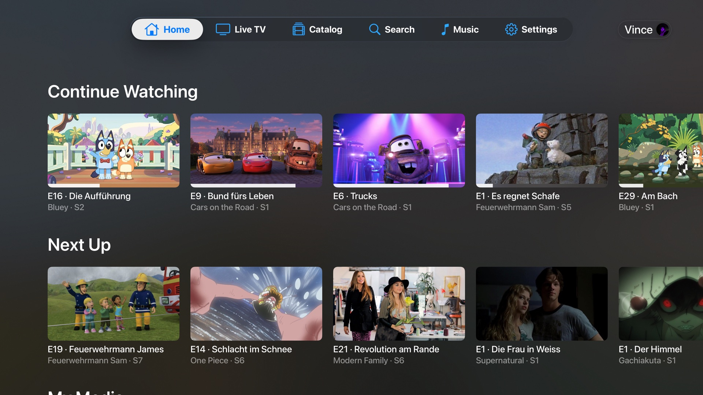
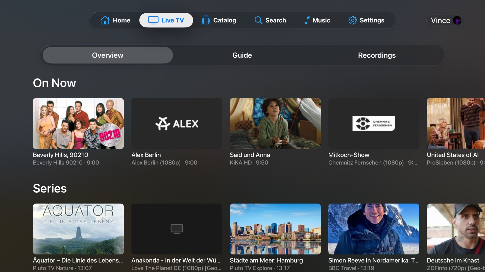
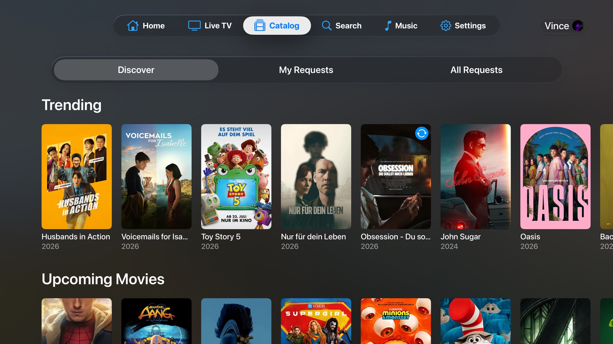
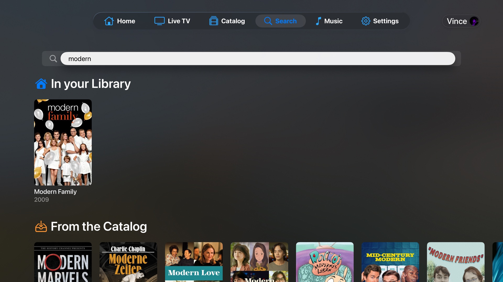
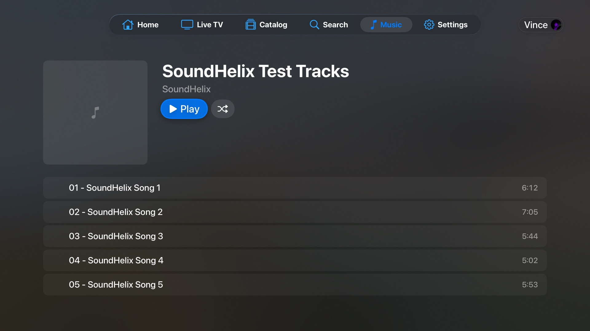
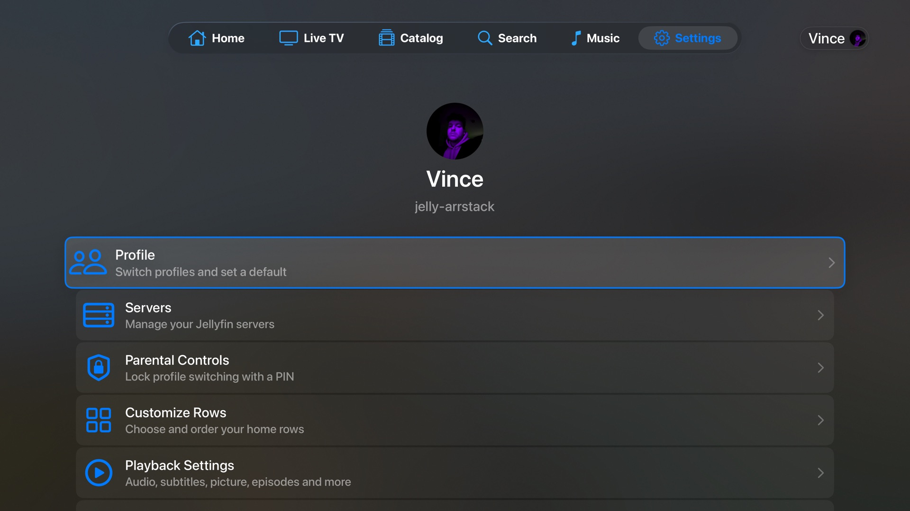

Sodalite
Your Jellyfin library and Seerr, together on Apple TV.
Sodalite is a native tvOS media player for your Jellyfin server, with first-class Seerr integration so you can browse and request what's missing without ever leaving the couch. Built on SwiftUI with a custom video engine underneath: Direct Play for almost every codec your Apple TV understands, real HDR and Dolby Atmos, Live TV, and your music library, all on the TV where you actually watch.






Two services, one remote
Sodalite brings Jellyfin and Seerr together in the same UI. Watch what's already on your server, then spot something on a trending row that isn't there yet and request it from inside the app, while Seerr handles the rest. No switching to a phone, no web UI, no pinging your homelab admin. Single sign-on, one focus-driven interface, the full library plus request loop on Apple TV.
Everything it does
📚 Browse & discover
- Multiple Jellyfin servers, switch without logging out
- Home rows you can reorder and toggle: Continue Watching, Next Up, per-library Latest, Playlists
- Movies, Series and Collections with instant filtering and All / Unwatched / Watched filters
- Search across your whole server, results as you type
- Rich detail pages: cast, ratings, where-to-watch, more-like-this and full filmographies
- Delete titles from the app, with optional Radarr / Sonarr cleanup via Seerr
🎬 Watch
- Direct Play for almost every codec: H.264, HEVC, AV1, VP9, MPEG-2, VC-1 and more, no transcoding
- Real HDR10, HDR10+, Dolby Vision and HLG with full metadata and automatic Match Content
- Dolby Atmos via EAC3+JOC, plus 5.1 / 7.1 surround with correct channel layout
- Client-side subtitles in every format, including styled ASS and bitmap PGS / DVD tracks
- Subtitle search & download and dual subtitles, right from inside the player
- On-device scrub previews even without server trickplay, on a hand-built transport bar
📺 Live TV & DVR
- Overview tab plus a full EPG guide with live now-line and channel favorites
- Timeshift: pause live TV and scrub back up to 10 minutes
- Recordings & timers: record a single show or a whole series from the guide
- Most channels play straight from the source, seconds to start, with Jellyfin fallback
🎵 Listen
- Browse your Jellyfin music library by album
- Native tvOS Now Playing screen with cover art and scrubbing
- Same engine as video, played back without transcoding
📨 Request what's missing
- Browse trending and popular media right inside the app
- One-tap requests for movies and full series
- Track what's approved, declined or already downloading
- Admin view to approve, decline or edit any user's request
🌍 Personal
- Parental controls with a Guardian PIN to lock profiles and settings
- Watch Stats: totals, completion rate, top genres, most-rewatched titles
- 26 languages, dark minimal design built for living rooms
- Appearance options plus an accent color with the Supporter Pack
- Liquid Glass accents on tvOS 26+, fully Siri Remote optimized
Open source, end to end
Every byte that touches your server is in the open. Your auth tokens stay in the system Keychain, and there's no telemetry, no analytics, no third-party SDK phoning home. Sodalite is licensed under GPL-3.0, the underlying video engine AetherEngine under LGPL-3.0, both with an Apple Store / DRM Exception under §7 so App Store and TestFlight distribution stay legally clean. Self-host the server, self-build the client, the whole loop is yours.
Status & requirements
The public TestFlight beta is open. Install via testflight.apple.com/join/nWeQzmBX on any device signed in with your Apple ID, then open TestFlight on your Apple TV. App Store release follows. Source on GitHub.
- Apple TV 4K (any generation), tvOS 26.0 or later
- Jellyfin server 10.9+ recommended
- Seerr 2.0+ (optional, for browse & request)